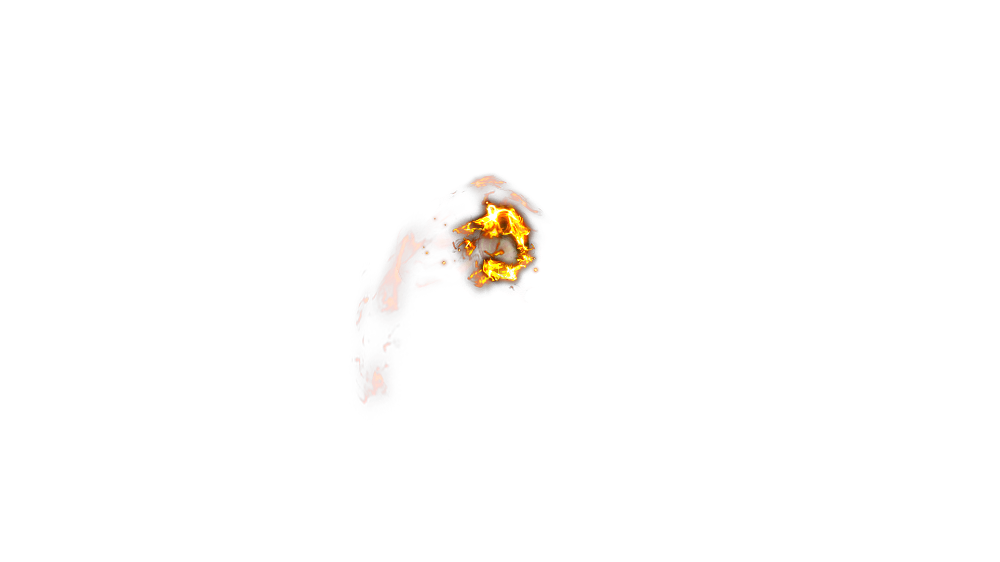
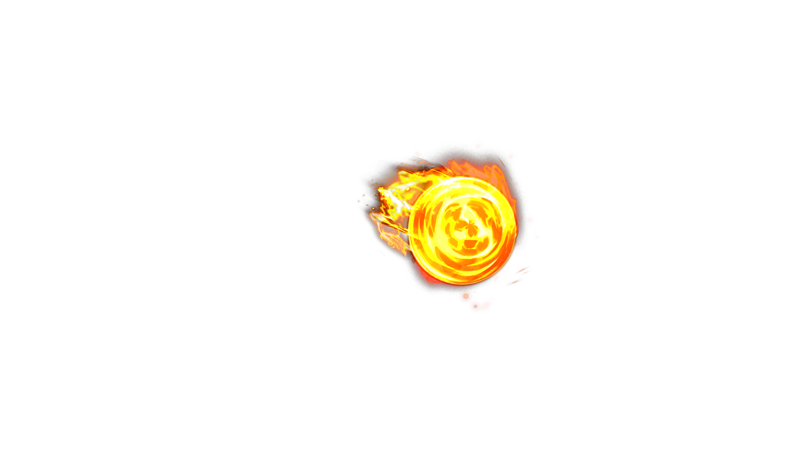
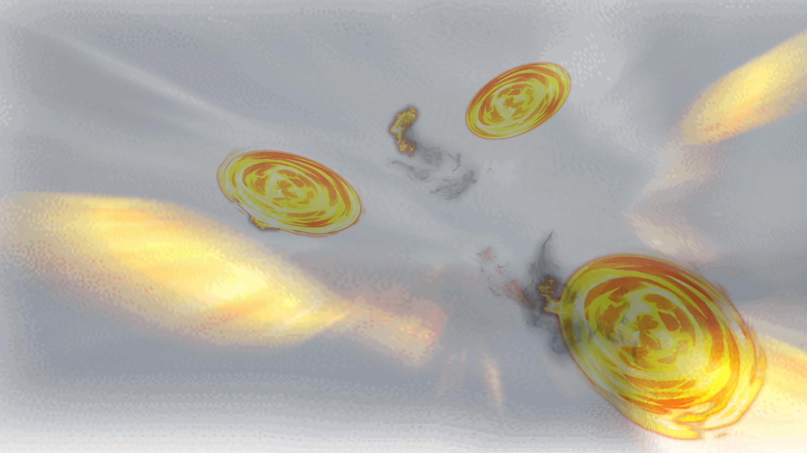
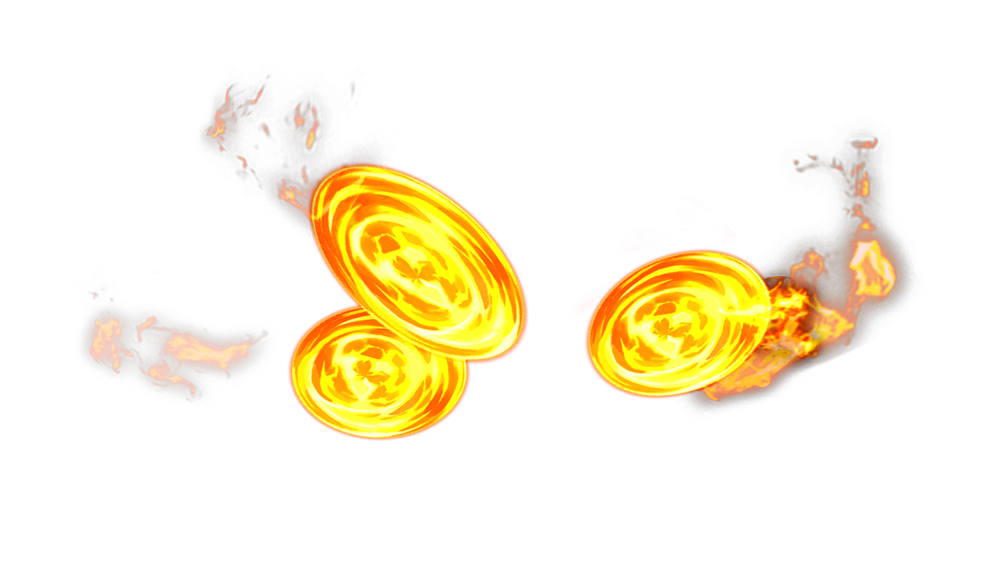
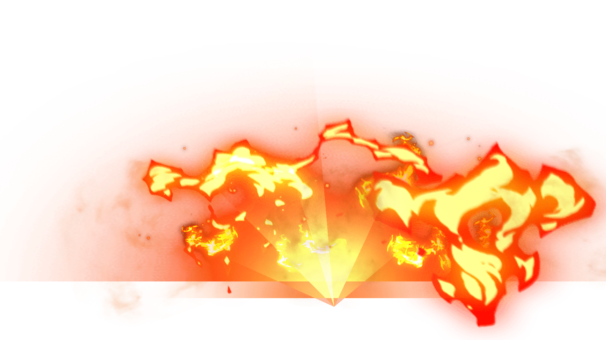
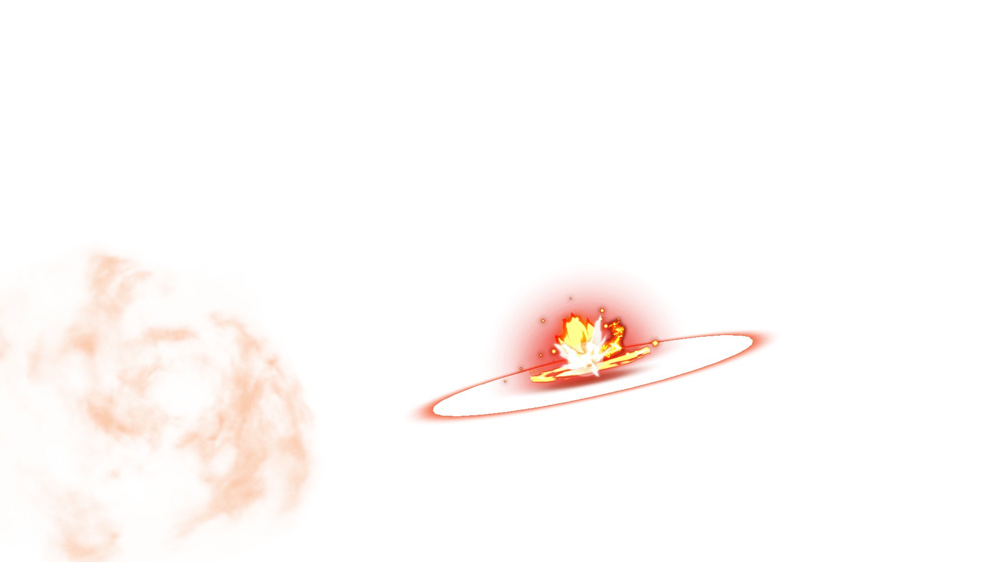
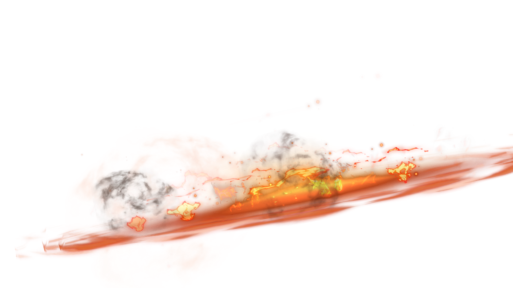

B02 / 024 · 连续动作抽帧
1 / 167
7 / 167
13 / 167
19 / 167
25 / 167
31 / 167

37 / 167
43 / 167
49 / 167

55 / 167
61 / 167
67 / 167
73 / 167
79 / 167
85 / 167
91 / 167
97 / 167

103 / 167
109 / 167

115 / 167

121 / 167
127 / 167

133 / 167
139 / 167
145 / 167
151 / 167

157 / 167
163 / 167